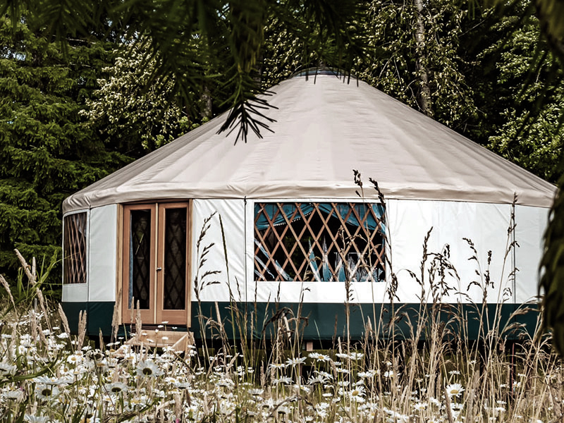
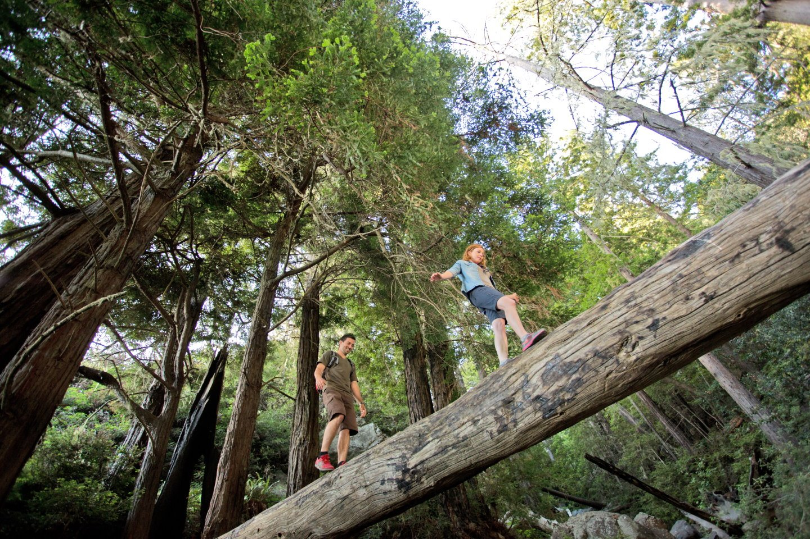

Our Story
Pacific Trails Resort was founded in 1957 by Jessica's grandparents, Pearl & Irving Schwartz. The original buildings, including our very first yurt structure, was built by her grandfather's own hands, designed and decorated by her grandmother's.
Today, Pacific Trails Resort is owned and operated by Jessica Schwartz, who has continued the tradition of providing guests with superior comfort and relaxation in the midst of the natural beauty of Big Sur. Our luxury yurts are a favorite of guests who want to experience the great outdoors without sacrificing comfort.
Our Mission
Our resort is a family-owned retreat that is dedicated to providing our guests with an unforgettable experience. We believe in the importance of preserving the natural beauty of Big Sur, and we are committed to providing our guests with a luxury camping experience that is both comfortable and respectful to the natural surroundings.
At Pacific Trails Resort, we believe in providing our guests with an unforgettable experience. From our guided hikes, bird watching tours, to our luxury accommodations and locally sourced dining options, there is something for everyone to enjoy. Come outside, and experience the natural beauty of Big Sur at Pacific Trails Resort.